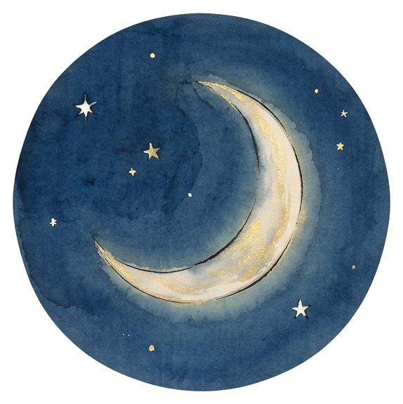
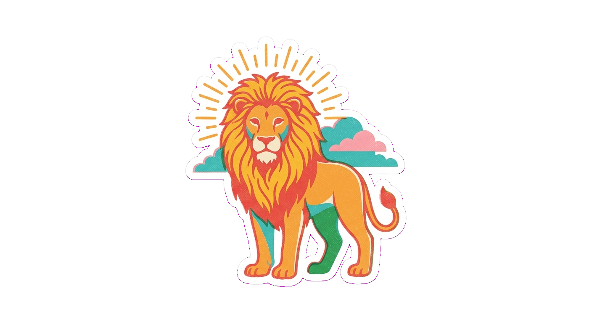
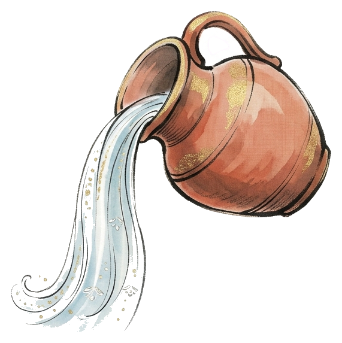
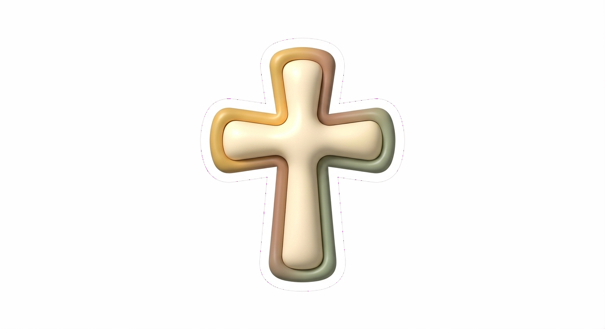
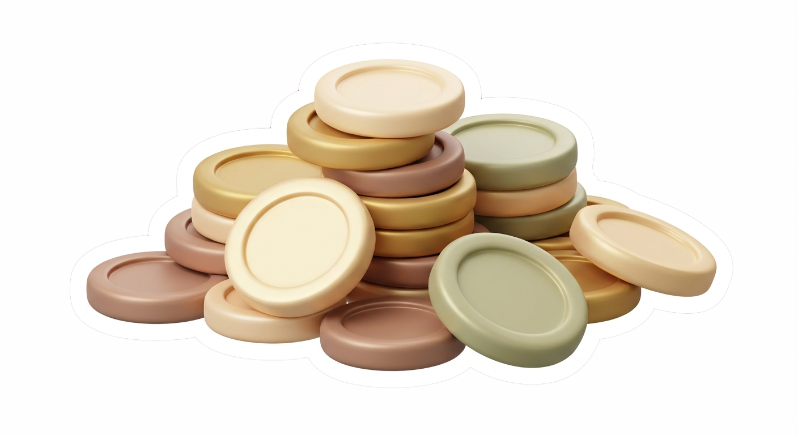

Built around you
Customize your homepage however you like. Keep the tools that draw you closer to God, and remove anything you don’t want — nothing is fixed in place.
This is your personal sanctuary, shaped for your needs and your needs only.